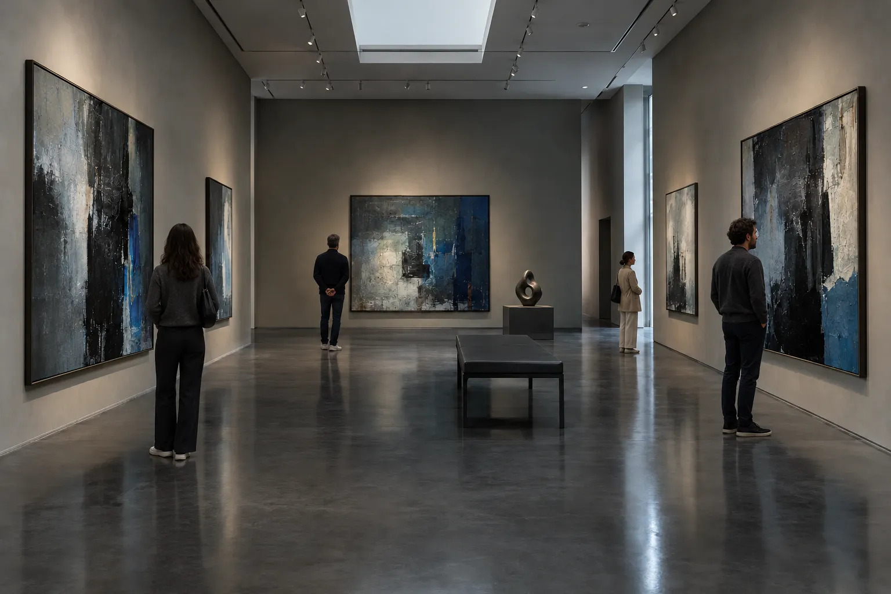

01 / 03Prezentowana praca
Niezależna sztuka od 1998 roku
Miejsce dla ciekawych świata. Odkrywaj dzieła, które zostają w pamięci, tworzone przez artystów kształtujących przyszłość.
Odkryj galerię

Wnętrze Formy
12 Crosby St · Nowy Jork